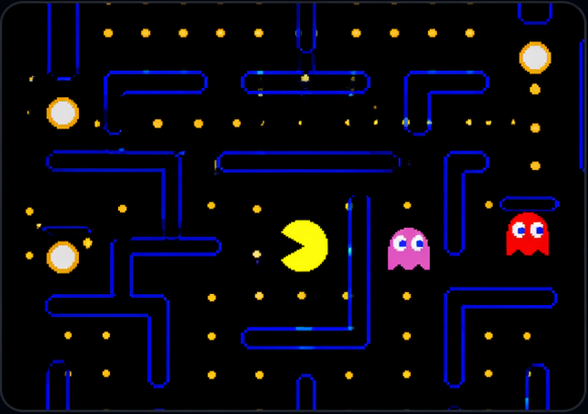
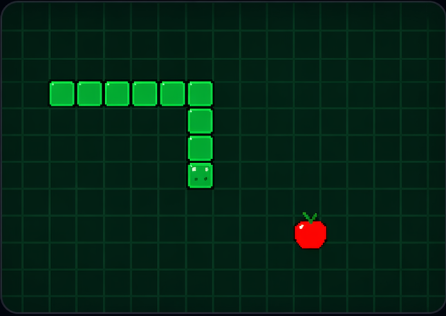
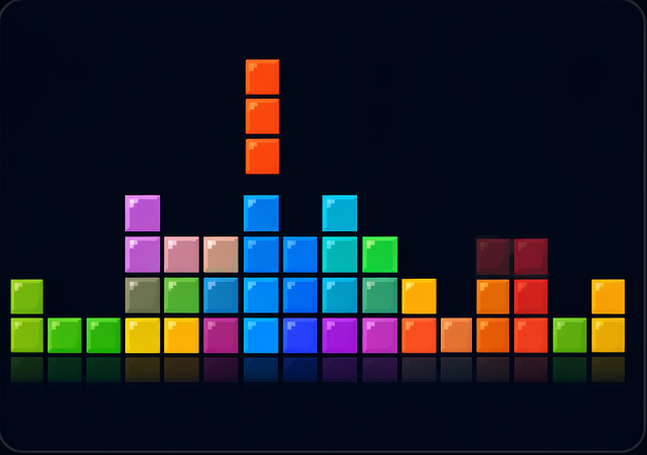
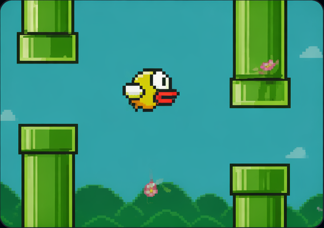

RP
Razvan Predescu
Game experiments, developer tools, and AI-built web apps.



12Published apps
3.4kTotal runs
8Remixes
4Featured apps
Creator pages turn individual builds into portfolios, trust, distribution, and a living feed of what Automaton Monster makes possible.
Game experiments, developer tools, and AI-built web apps.



Profiles give builders identity, make remixes visible, and help users discover trusted templates and useful software.
Operations apps
Builds invoice triage, approval desks, and admin utilities. Her apps are forkable starters for operations teams.
Team productivity
Creates sprint tools, meeting helpers, and team dashboards. Most builds include a “deploy your version” prompt.

Official templates
Maintains official templates, examples, and trusted reference builds for new users and agents.
10:42Maria published Invoice TriageNew10:28Jon remixed Sprint Poker for mobile standupsRemix09:51Automaton Ops verified a template screenshot setTrusted09:13Razvan shipped Pac-Man Editor v2Updated